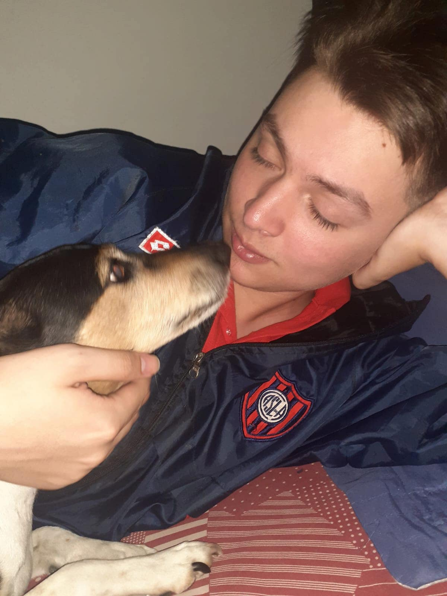

Máximo Ceballos | WDD 130

Hello! My name is Máximo Ceballos and I am from Buenos Aires, Argentina. I enjoy reading and playing videogames. I'm currently studying Software Development in BYU Idaho. My favourite writer is Jorge Luis Borges and my favourite tale from him is "El Inmortal". I like lots of other writers also, like Herman Hesse, Rousseau, Edgar Allan Poe and Shakespeare. I've got plenty of pets. Six in total, 4 cats and 2 dogs in total. I'm studying Software Development because a teacher I had in high school inspired me. Mariano García is his name, and he once said that he would like to set a foot on Mars before dying. That would also be my dream.
- My Favourite Temples